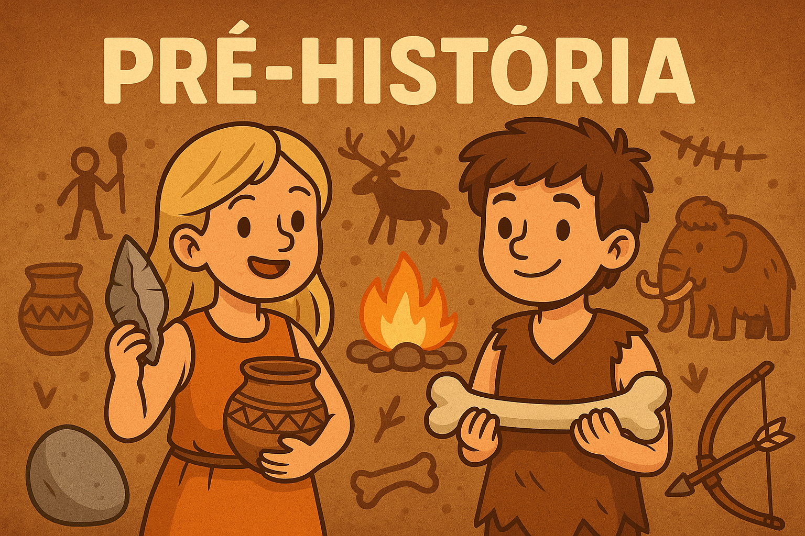

Jogo da Pré-História

Iniciar
Jogador:
|
Pontuação:
0
/90
Clique em um item e selecione a cor correspondente ao período
🟤 Paleolítico
🟢 Neolítico
⚙️ Idade dos Metais
Verificar
Próxima Fase
🎉 Parabéns,
!
Você completou o jogo com
ponto(s)
!
🔄 Jogar Novamente
➡️ Próximo Módulo